How to Recognize It
The 9-hole jaws, the aluminum H-frames, and the aluminum rear-jaw pivot nuts identify a Type 2.
See the gallery of detail photos below. The Workmate 79-001 Type Study spreadsheet shows how all ten Types compare.
Black & Decker Workmate 79-001 Type 2
The Type 2 is the most commonly found Type of the Workmate 79-001, which also almost certainly means it was the biggest seller. The Type 2 is also something of a chameleon. Black & Decker made more changes during the production run of the Type 2 than on any other Type. This makes it tricky to describe for a Type Study. In the 79-001 Type Study spreadsheet I've listed what might be considered the common characteristics of a Type 2, with a note that there can be considerable variation. Shown above are my Type 2's, with the one on the left representing early production. Two changes had already occurred by the time this one was made. The one on the right is from 13 months later, after four more changes. (All four are visible, one just barely. Click on the photo to enlarge it and play "Spot the Difference"!) There were eight more changes to come over the final nine months of the Type 2's run.
The Type 2 also experienced weight loss during its two-year-plus production run. The early Type 2's like the one on the left are the heaviest of all the 79-001's, at more than 34 pounds. The later one on the right weighs 10 percent less!
Notable Characteristics
The first Type 2's that were sold were identical to the Type 1, with only a few changes:
Component Changes During Production
Changes in the Type 2 started soon after its introduction and appeared at a rapid pace.
All dates given below are approximate.
The Type 2 also experienced weight loss during its two-year-plus production run. The early Type 2's like the one on the left are the heaviest of all the 79-001's, at more than 34 pounds. The later one on the right weighs 10 percent less!
Notable Characteristics
The first Type 2's that were sold were identical to the Type 1, with only a few changes:
- The number of peg holes in each jaw was reduced from 10 to 9, by eliminating the center hole along the edge where the jaws meet. This created the "9-hole 4-corner" pattern, which was then replaced by the "9-hole zigzag" pattern in less than a year. The two 9-hole patterns are shown side by side in the photo gallery below.
- The four jaw-mounting brackets changed from an aluminum block to a steel "U" fastened from below. This eliminated the need for the extra bolt holes near the ends of the top of each jaw on the Type 1.
- One of the two vertical V-grooves in each jaw was eliminated, leaving the remaining vertical V-groove positioned opposite a non-grooved section of the other jaw.
- The screws securing the top ends of the side stays into the slots in the upper frame pieces were eliminated in favor of permanently attached male keyhole connectors. This simplified factory assembly, but they had to add a keyhole to make it possible. The revised slot now turns upward at its rear end, terminating in the necessary keyhole.
- The Type number was added to the label on the top of the jaw and was also stamped in ink underneath the jaw.
- Painted lower frame and legs
- Plated upper frame
- Squat cylindrical rubber foot pads
- 9-hole zigzag hole pattern in the jaws
- Aluminum arm on the vise handle
Component Changes During Production
Changes in the Type 2 started soon after its introduction and appeared at a rapid pace.
All dates given below are approximate.
- July 1975 - Not a component change, but production of the Type 2 was interrupted due to temporary layoffs at the Brockville factory
- August 1975 - Production of the Type 2 resumed,
- September 1975 - The finish on the legs and lower frame was changed from plating to gray paint. This was the first use of paint on a 79-001. The scratch guards on the upper frame were introduced at the same time, to protect the paint on the lower frame. This is the configuration seen in my Workmate on the left in the opening photo.
- October 1975 - The conical rubber foot pads from the Type 1 were replaced with squat cylindrical ones.
- February 1976 - The holes at the corners of the jaws where their edges meet were moved a few inches toward the center, creating the 9-hole zigzag pattern that was used for all of the following 79-001's that were manufactured in Canada. (The Irish imports that were badged as 79-001 Type 3 and 5 continued to use the 10-hole jaw.)
- June 23, 1976 - The aluminum core in the center of the plastic vise handles was changed to plastic.
- October 1976 - Not a change in the Workmate itself, but the style of the swivel grips changed. The posts were shortened and the tabs were moved to the sides instead of the front and back.
- October 28, 1976 - The step decreased in width from about 7" to 6", now with only three ribs instead of four. This change, along with a slight reduction in the thickness of some of the steel parts, reduced the weight of the later Type 2's by about 3.5 pounds in comparison with the early ones! This is the configuration seen in my Workmate on the right in the opening photo.
- November 1976 - The scratch guards were discontinued about this time. Also, the metal bushings at the pivot points of the H-frame began a changeover from steel to white plastic. Workmates from the next 12 weeks can have either plastic or steel bushings.
- February 11, 1977 - The remaining unpainted steel parts (the side stays, top-latch levers, and upper frame pieces) were painted gray. At the same time, the steel H-frame bushings were phased out, suggesting that the changeover to plastic bushings was made to better protect the newly painted upper frame.
- March 1977 - The vise handle and arm was replaced by a hollow plastic handle and plastic arm. At the same time, the vise screw was lengthened, in preparation for increasing the maximum jaw opening. At this point the guide slot in the upper frame was still short, so the maximum opening was still restricted to 4". Also in March, veneered MDF was used for the jaws for the first time on some Workmates.
- May 1977 - The inner spring-steel catch for the folding legs (the one that holds them closed) changed shape. Instead of being a half circle, it has a couple of slight bends in it, somewhat similar to the outer catch.
- June 1977 - In the last week of production of the Type 2, the guide slot was lengthened so the jaws would open to 5-1/2".
Click on any image below to open the gallery of full-screen images.


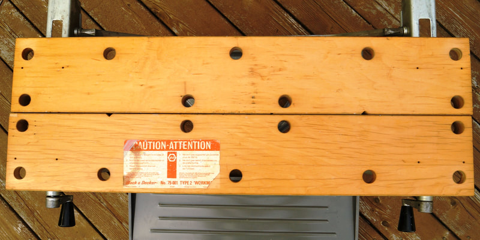

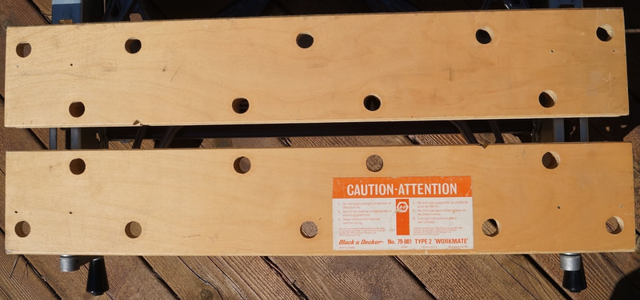

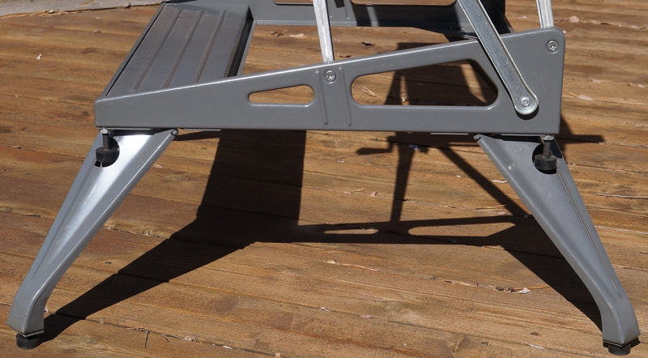

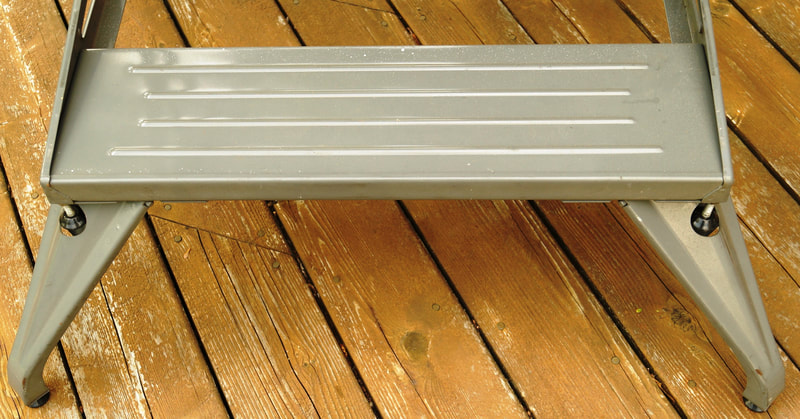

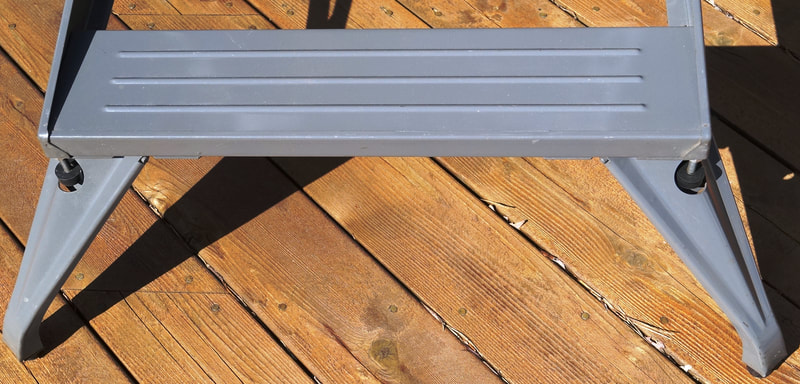

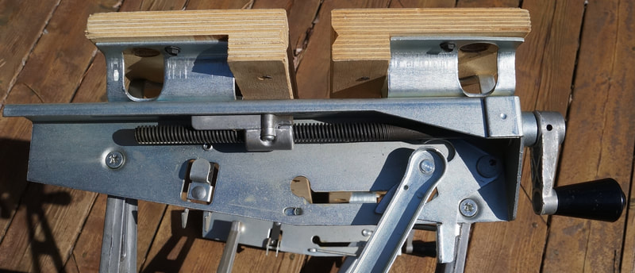

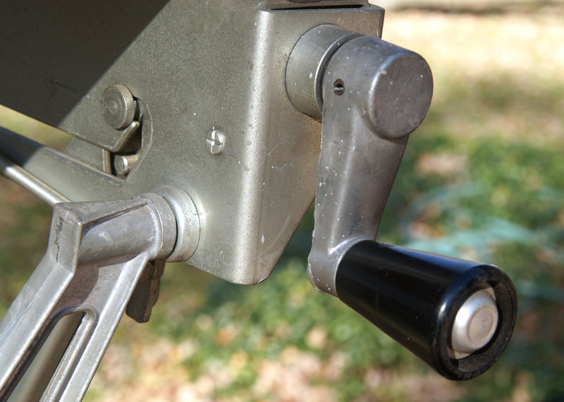

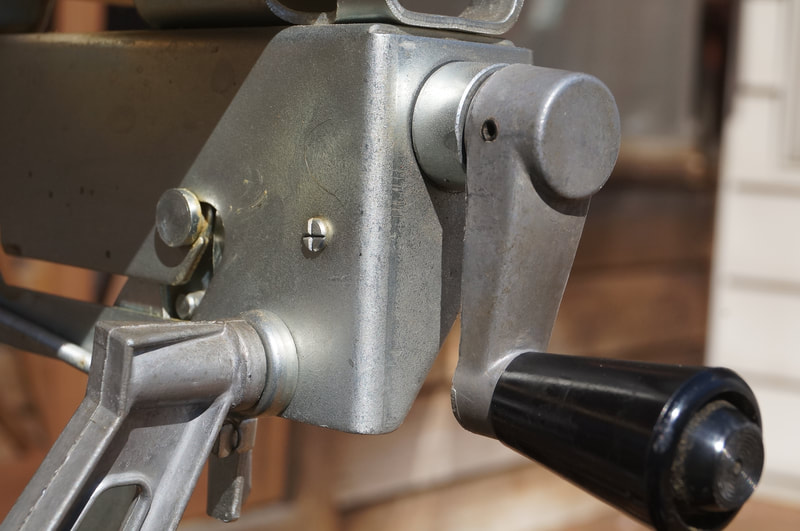


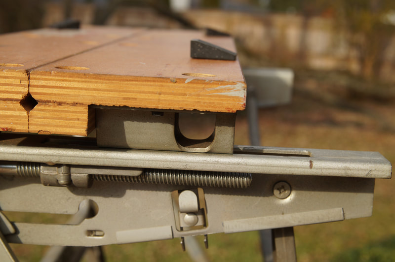

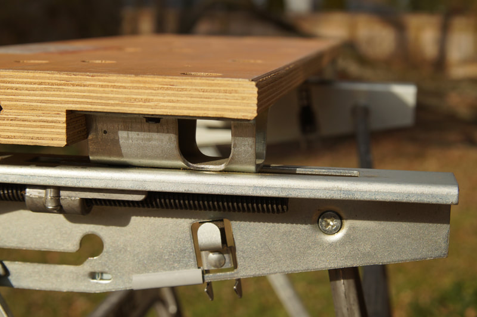

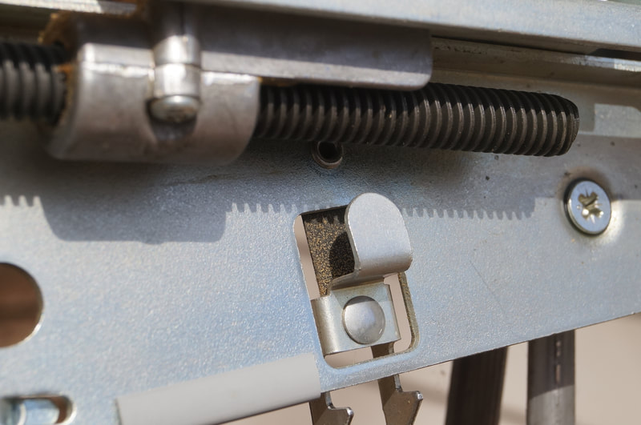


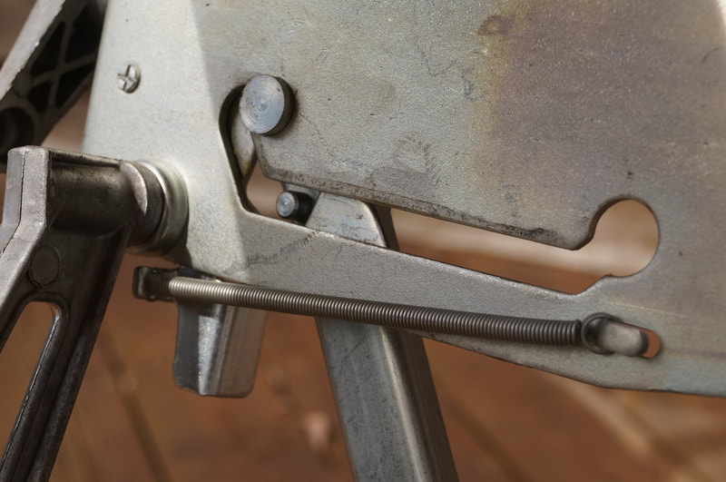


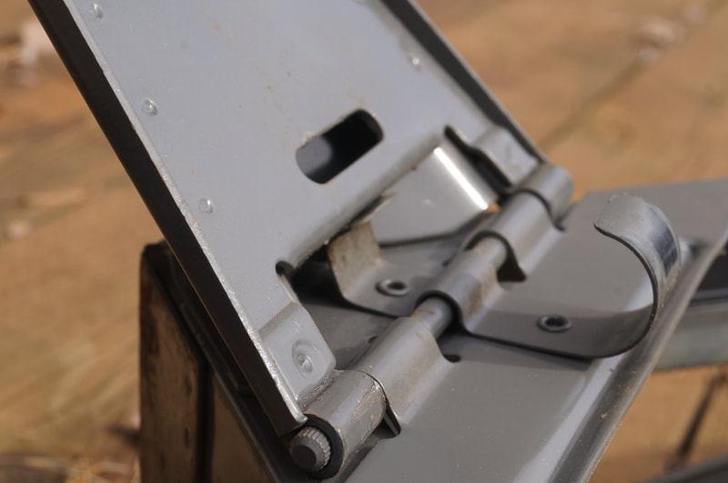

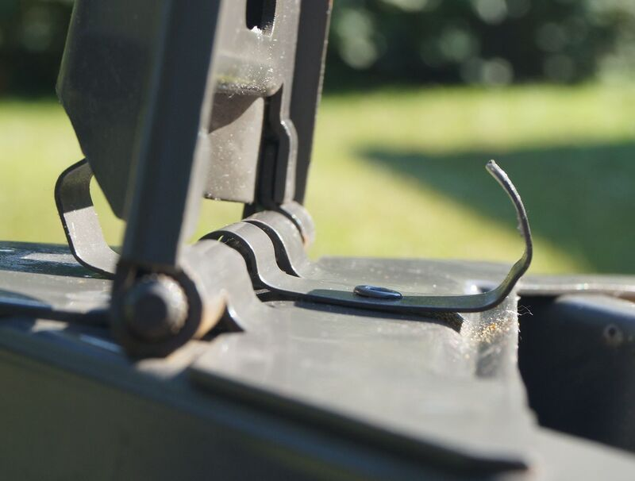

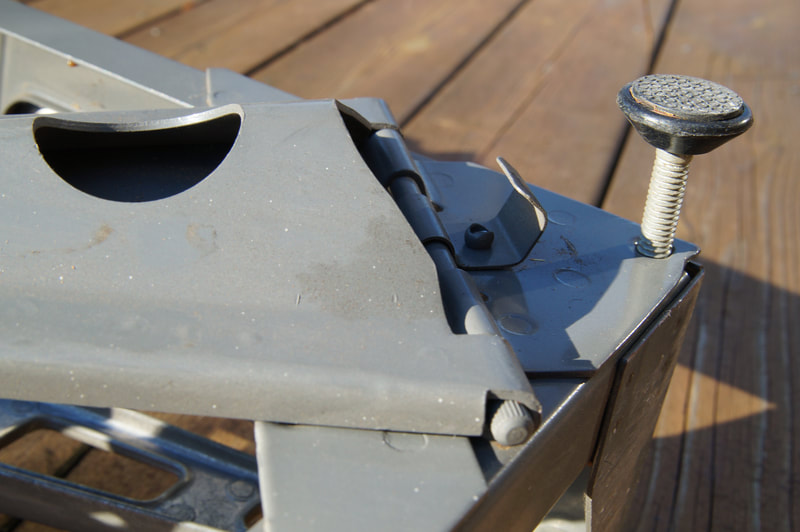

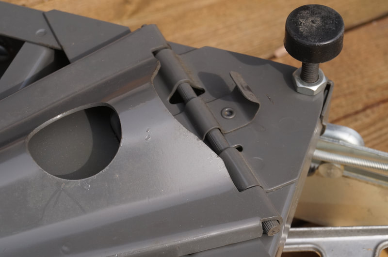


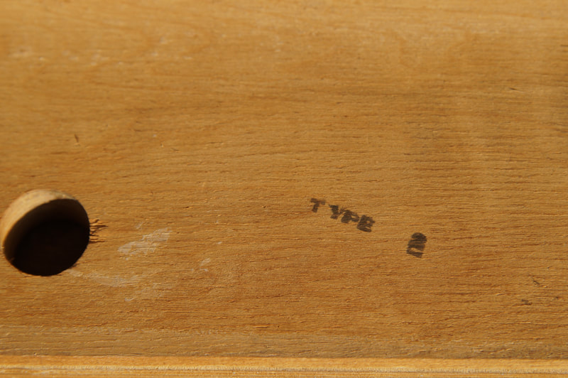

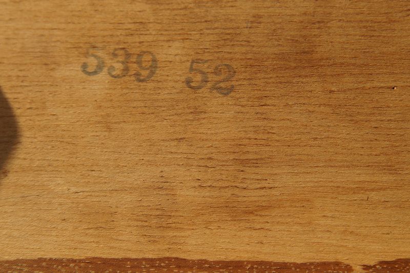

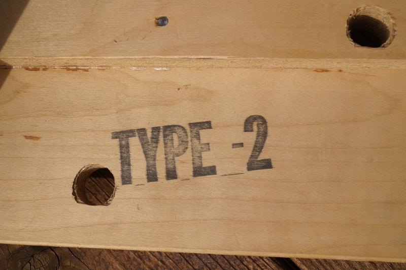

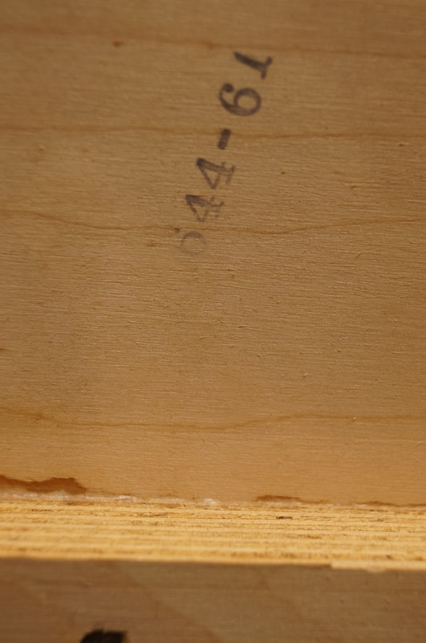